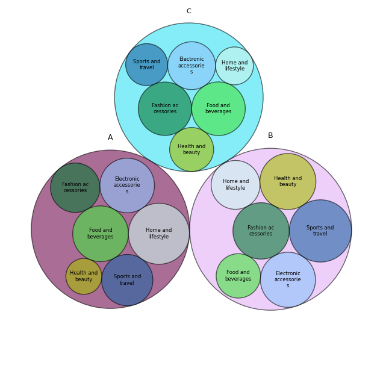
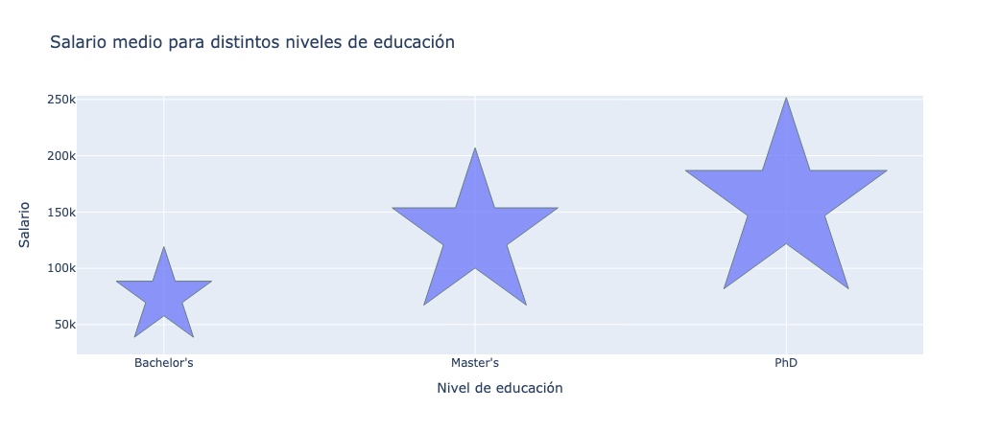
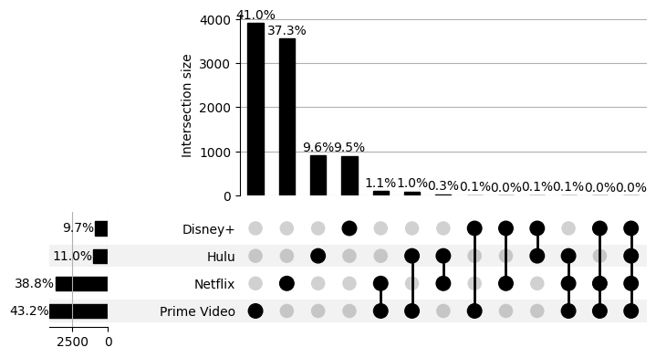

Visualización de Datos
Prueba de Evaluación Continua (PEC): 2
TÉCNICA GRUPO I (Básicas y populares): Circle Packing

TÉCNICA GRUPO II (Habituales y específicas): Icon Chart

TÉCNICA GRUPO III (Menos habituales o específicas): UpSet (Visualizing Intersecting Sets)
